Obraz cały czas lekko płynie, także gdy nie przewijasz. Przy przewijaniu kadr zostaje chwilę z tyłu i osiada, jak ciało w wodzie. Kamera nie zatrzymuje się między pozycjami.
Woda wokół postaci przesuwa się niezależnie od niej, bez widocznego wycięcia. Prawdziwe drobiny z nagrania unoszą się, gdy schodzisz. Nic nie jest rysowane.
Start prawie czarno-biały, z granatem w cieniach (próbka 2). Im głębiej, tym więcej koloru, aż do wody (próbka 4). Na stronie tylko działania i liczby mają kolor wody.
Słowa i ujęcia mają własne odcinki. Na tym samym miejscu nic nie zachodzi na siebie. Test przechodzi całą stronę co 0,1 ekranu.
Układ odpowiada na pytania kogoś, kto robi to pierwszy raz: czy dam radę, ile to kosztuje, kiedy, czy to bezpieczne, kto uczy, jak się zapisać. Taki sam we wszystkich wersjach.
Od pierwszej chwili w pasku jest „Kursy i terminy” dla tych, którzy przyszli po konkret. Każdy termin można zarezerwować jednym kliknięciem.
Bez cięć. Kamera to drugi nurek: towarzyszy jej, podpływa, dryfuje, w końcu pozwala jej odpłynąć. Słowa stoją nisko i na środku jak napisy początkowe, a kamera kadruje ją ponad nimi. Punkt odniesienia: długie ujęcia Lubezkiego.
16.3 ekranu, z tego film 10.5
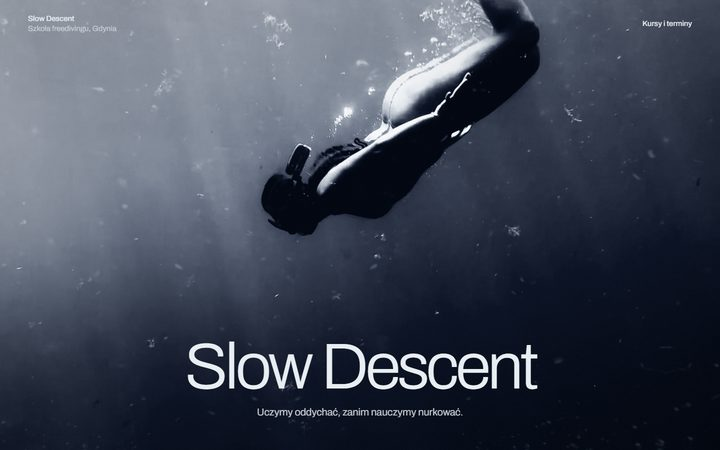
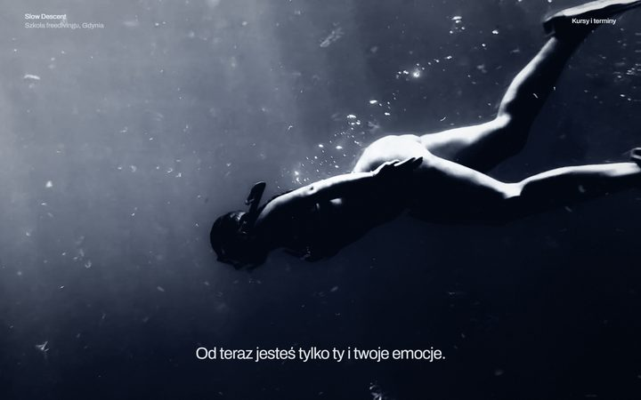
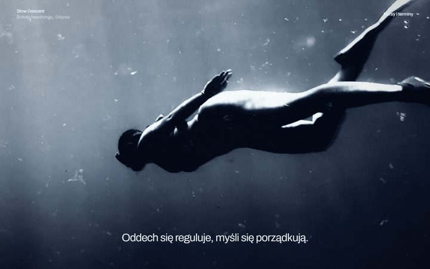
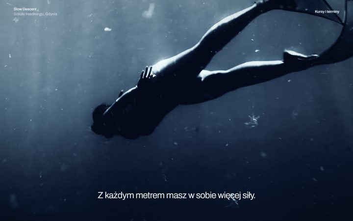
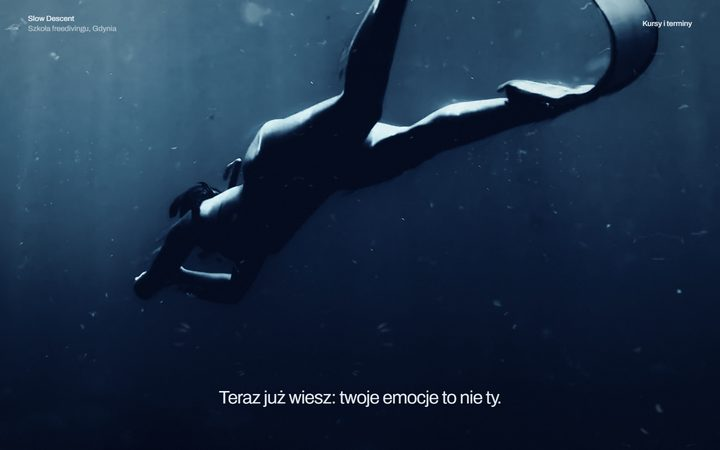
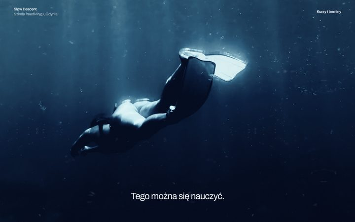
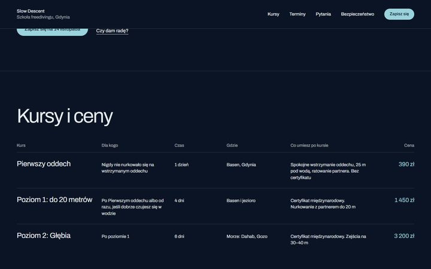
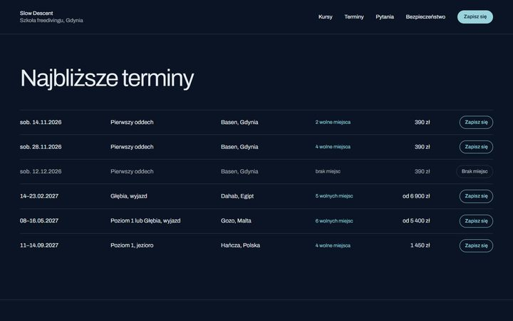
Kinowy kadr 2,39:1 między granatowymi pasami. Słowa żyją w dolnym pasie, więc nigdy nie spotkają się z obrazem. Długie przenikania, zbliżenia z 4K. Gdy pada ostatnie zdanie, kadr otwiera się na cały ekran i wchodzi prawdziwy kolor wody.
18.3 ekranu, z tego film 12.5
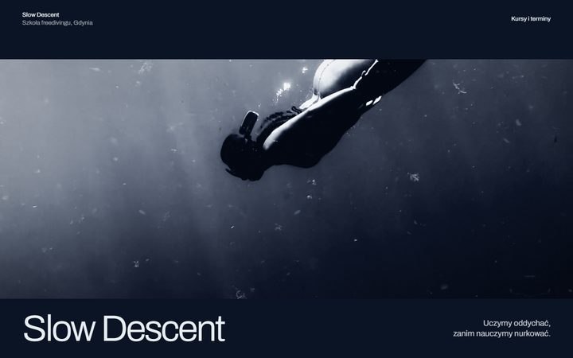
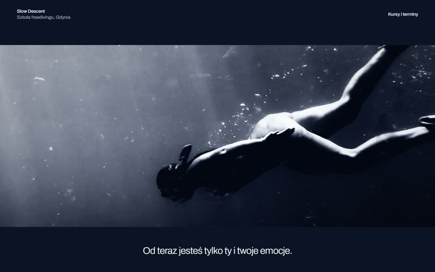
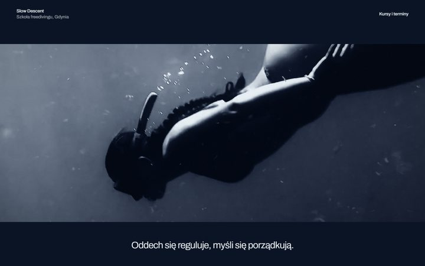
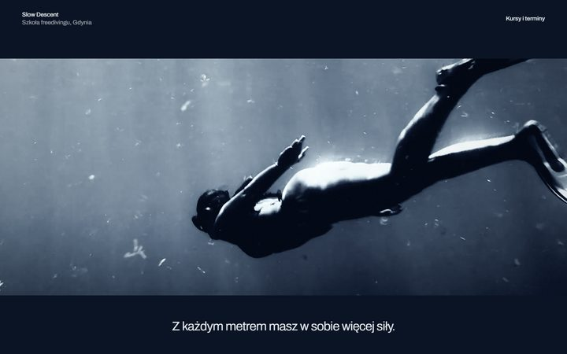
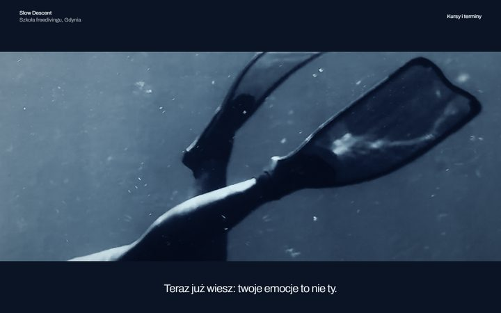
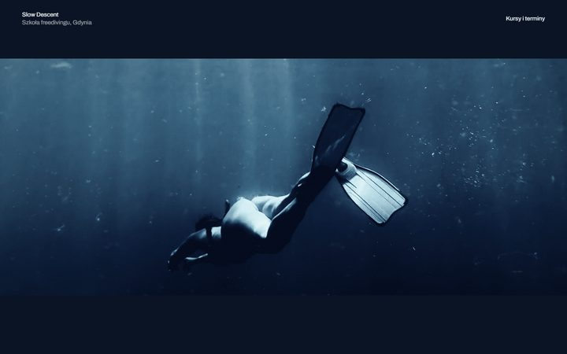
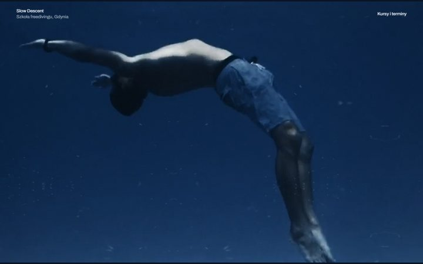
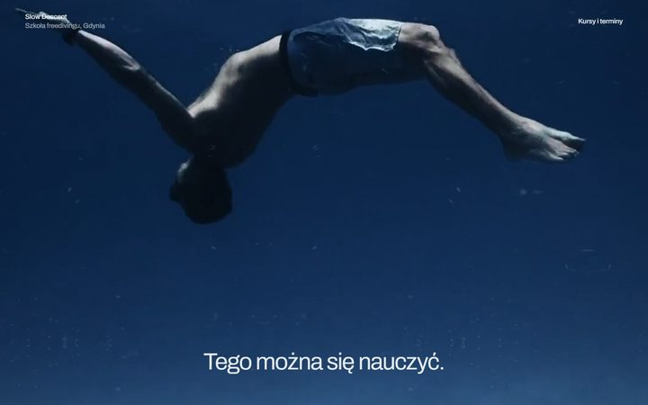
Zimny start. Najpierw słowa same na granacie, potem obraz bez słów, potem znów słowa, jak plansze w kinie niemym. Zbliżenia: maska, dłoń, płetwa. Dopiero po nich pierwszy szeroki kadr, a w niego wchodzi tytuł. Jedno zawsze kończy się, zanim zacznie się drugie.
21.5 ekranu, z tego film 15.7
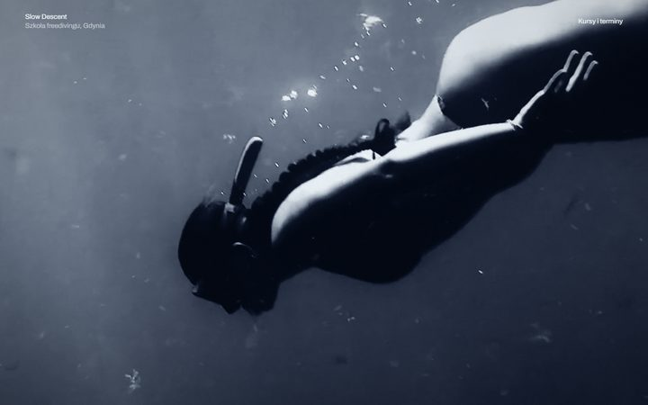
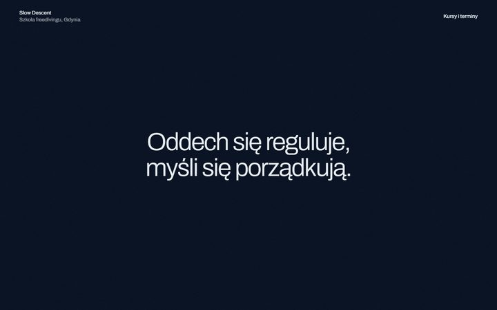
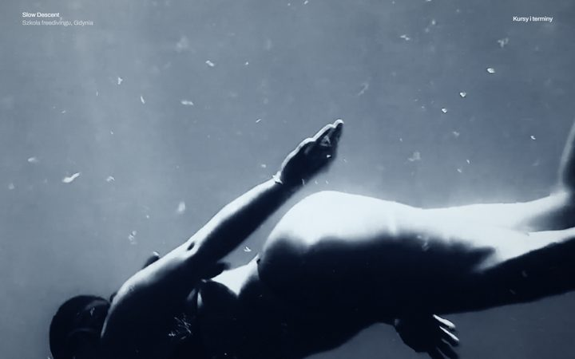
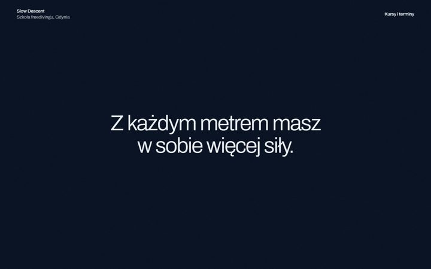
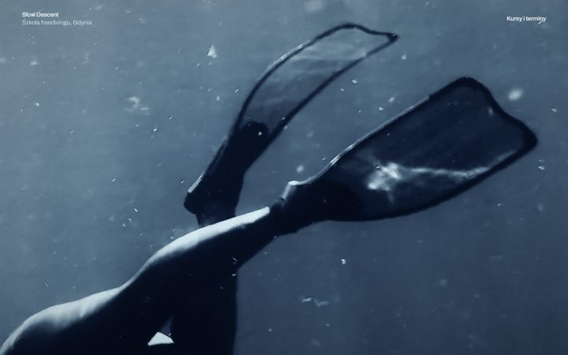
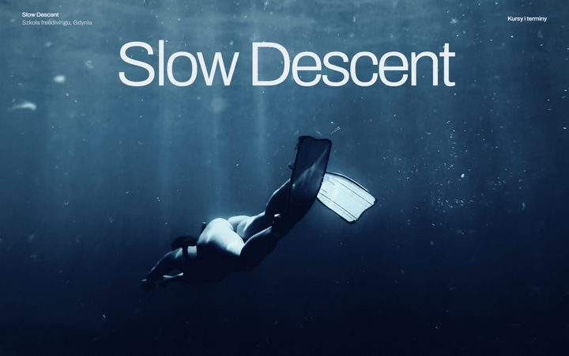
Wiele żyć, jeden ruch. Cięcia wypadają na akcji: płetwa przechodząca przez obiektyw chowa zmianę osoby. Słowa stoją u góry kadru. Kolor rośnie z każdym cięciem, aż do prawdziwej wody przy powierzchni.
17.5 ekranu, z tego film 11.7
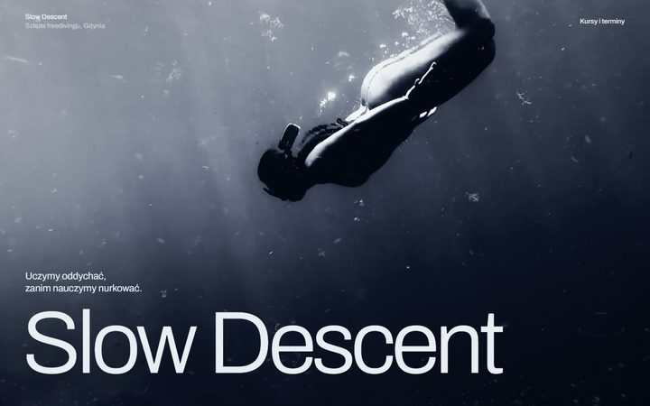
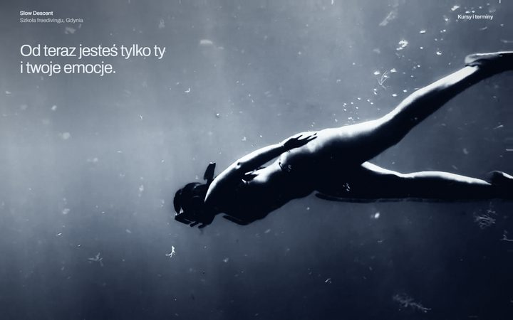
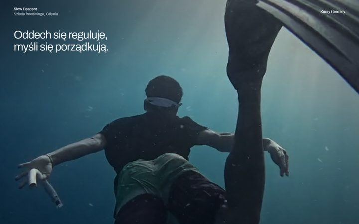
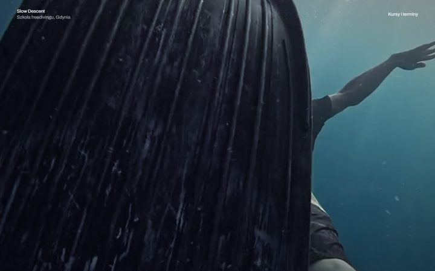
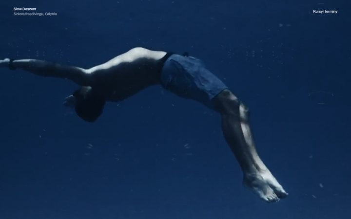
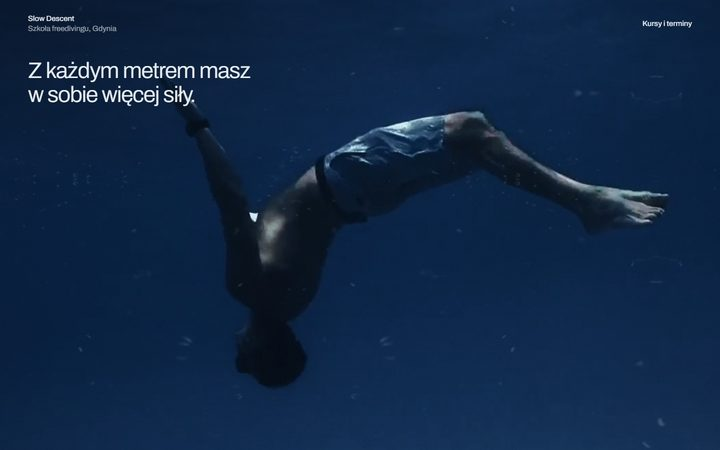
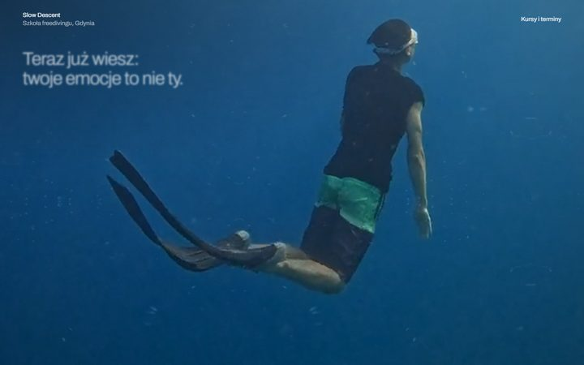
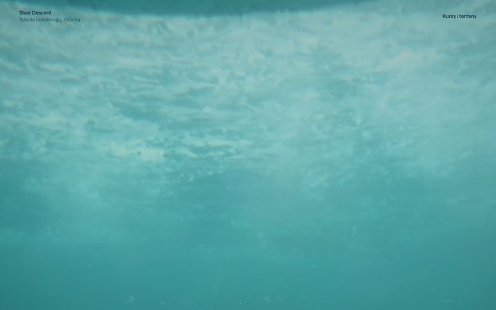